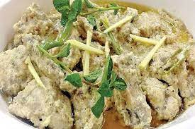

White Karahi

White chicken karahi is a delicious and aromatic Pakistani dish made with
boneless chicken, onions, garlic and ginger paste, yogurt, and a blend of
spices. It is typically served with rice or naan bread and is a popular
choice for special occasions and gatherings. The chicken is fried until it
is tender and the sauce has thickened, creating a mouthwatering
combination of flavors and textures. Whether you are a fan of Pakistani
cuisine or just looking for a new and exciting recipe to try, white
chicken karahi is sure to become a family favorite.
Ingredients:
- 1 kg boneless chicken
- 2 medium onions, finely chopped
- 1 tsp garlic paste
- 1 tsp ginger paste
- 1 cup yogurt
- 2 tbsp oil
- 1 tsp cumin seeds
- 1 tsp coriander seeds
- 1 tsp red chili powder
- 1 tsp turmeric
- 1 tsp salt
- 1 cup water
Instructions:
- Cut the chicken into small pieces and set aside.
-
Heat the oil in a karahi or large wok over medium heat. Add the cumin
seeds and coriander seeds and fry for a few seconds until fragrant.
-
Add the onions and fry until they are golden brown. Add the garlic and
ginger paste and fry for another minute.
-
Add the chicken and fry until it is no longer pink. Add the yogurt, red
chili powder, turmeric, and salt and mix well.
-
Add the water and bring to a boil. Reduce the heat to low and simmer for
20-25 minutes, or until the chicken is tender and the sauce has
thickened.
- Serve hot with rice or naan bread.